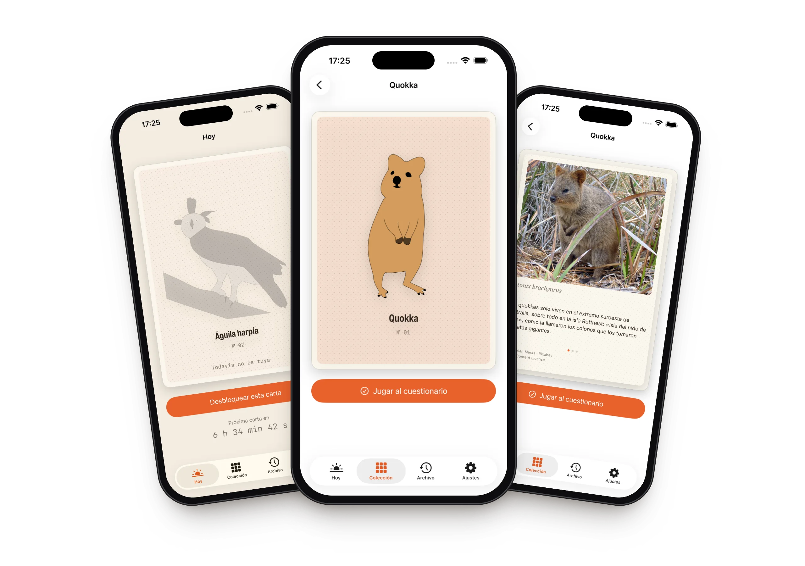
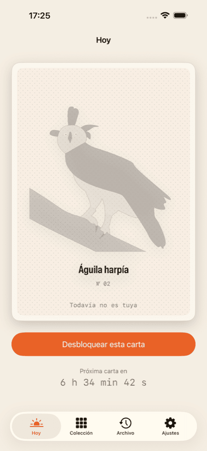
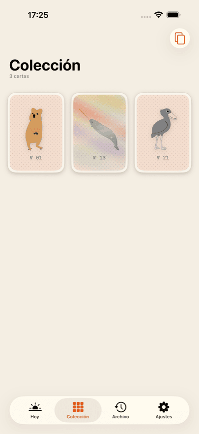
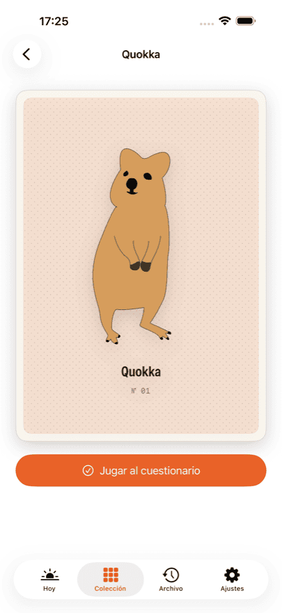
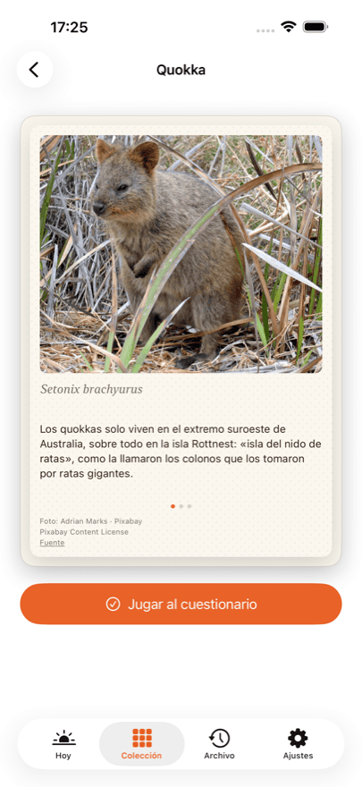
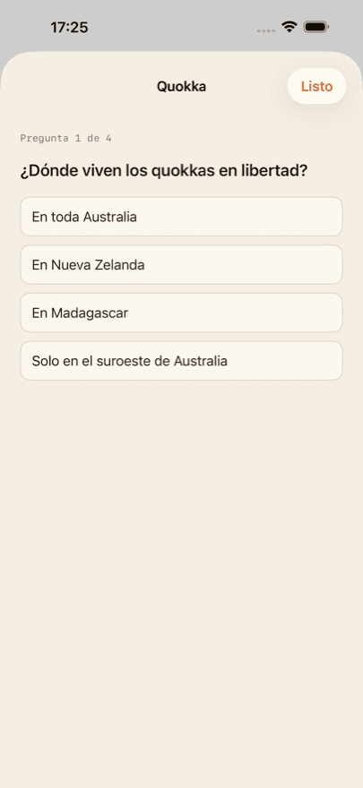

Daily Bestiary
Coleccionar cartas de animales






Qué incluye
Una carta al día
Una, nunca más. La carta del día se calcula a partir de tu propia fecha de inicio, no de una fecha del calendario: empiezas cuando quieras.
Una foto y tres datos
Cada dorso lleva una fotografía real del animal, tres datos y el nombre científico.
Un quiz por animal
Cuatro preguntas para cada animal, revisadas por un profesor de biología. Siempre se pueden repetir.
Una colección que crece
El álbum muestra solo tus propias cartas. Sin huecos vacíos, sin «x de y», sin carrera.
Cartas holográficas
Algunas cartas brillan: inclina el teléfono y la luz recorre la superficie.
Collector
Collector abre el archivo: un día perdido todavía se puede recuperar. La carta del día está incluida cada día, y obtienes tus estadísticas del quiz de toda la colección.
Collector es una suscripción y se renueva hasta que la canceles. Puedes cancelarla en cualquier momento en los ajustes de tu cuenta de Apple. Los precios y las duraciones vigentes aparecen en el App Store, porque varían según el país.
Sin cuenta, sin feed, sin anuncios
No hay registro ni inicio de sesión. Tu colección vive en tu dispositivo y —si has iniciado sesión en iCloud— se sincroniza de forma privada entre tus propios dispositivos. El desarrollador no tiene acceso a ella.
No hay nada que deslizar ni nada que farmear. Sin anuncios, sin redes publicitarias, sin seguimiento entre apps. Las compras se gestionan a través de un proveedor de servicios; la política de privacidad detalla exactamente qué llega hasta él.
Créditos de las fotos
Los dibujos del anverso de las cartas están hechos a mano. Las fotografías del dorso proceden de fuentes libres: Pixabay, Unsplash y Wikimedia Commons.
Cada fotografía está acreditada al dorso de su propia carta, con el autor, la licencia y un enlace a la fuente. No en la letra pequeña, sino allí donde está la imagen.
Preguntas frecuentes
¿Cuánto cuesta Daily Bestiary?
La descarga es gratuita y las tres primeras cartas son gratis, con dorso, datos y quiz. A partir de ahí desbloqueas la carta del día por separado, compras un paquete de diez o te suscribes a Collector. Los precios vigentes aparecen en el App Store; varían según el país.
¿Necesito una cuenta?
No. No hay registro, ni inicio de sesión, ni perfil. La app nunca pide un nombre ni una dirección de correo.
¿Cuántas cartas hay en total?
No se dice en ningún sitio: ni en la app ni aquí. Un total convierte el coleccionar en una barra de progreso, y eso es justo lo que no queremos. Cuando tengas todas las cartas que existen, la app te lo dirá.
¿Qué pasa si me salto un día?
Esa carta no se pierde. Collector abre el archivo, donde los días perdidos se pueden recuperar. Sin Collector, al día siguiente simplemente llega la siguiente carta.
¿Se sincroniza mi colección entre iPhone y iPad?
Sí, siempre que ambos dispositivos hayan iniciado sesión en iCloud con la misma cuenta de Apple. La sincronización pasa por tu base de datos privada de iCloud, que el desarrollador no puede consultar.
He reinstalado la app: ¿he perdido mis compras?
No. En los ajustes de la app y en cada pantalla de compra está «Restaurar compras». Eso vuelve a vincular tu suscripción y el saldo restante a tu cuenta de Apple. La colección regresa por iCloud.
¿Cómo cancelo Collector?
A través de Apple, no de la app: Ajustes → tu nombre → Suscripciones. Allí se puede cancelar en cualquier momento, con efecto al final del periodo en curso. La app ofrece el mismo camino desde el Customer Center en sus ajustes.
¿Funciona la app sin conexión a internet?
Sí. Todas las cartas, fotografías y preguntas están dentro de la app y no se descargan. Solo hace falta conexión para las compras y para la sincronización con iCloud.